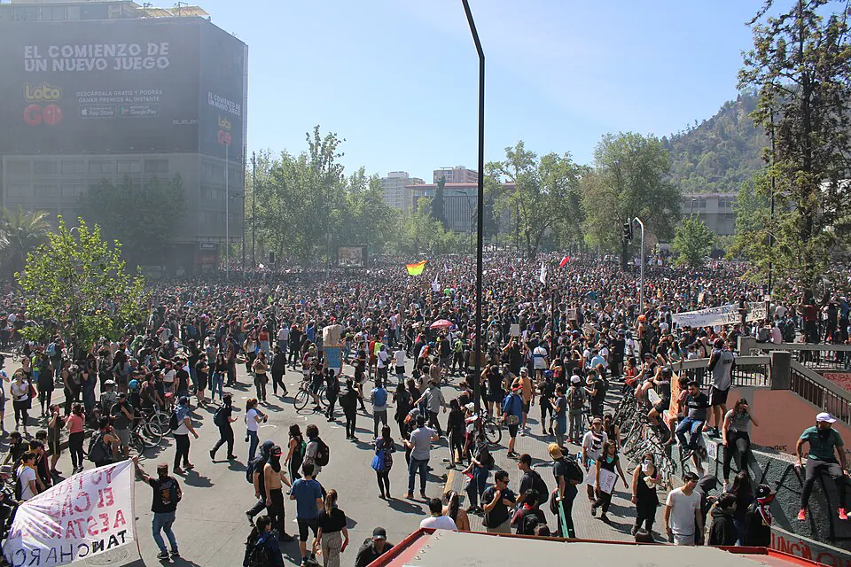

Estallido social

A comienzos de octubre de 2019, un alza de 30 pesos en el pasaje del metro de Santiago motivó evasiones masivas convocadas por estudiantes secundarios. El 18 de octubre, las protestas se extendieron: varias estaciones del metro fueron incendiadas o dañadas y el presidente Sebastián Piñera decretó estado de emergencia, con militares en las calles y toque de queda. En los días siguientes, el movimiento se extendió a todo el país con demandas sobre pensiones, salud, educación, salarios, costo de la vida y desigualdad, resumidas en la consigna "No son 30 pesos, son 30 años". El 25 de octubre, una marcha en Santiago reunió a más de un millón de personas. Hubo también saqueos, incendios y ataques a la propiedad pública y privada. El Instituto Nacional de Derechos Humanos y la Oficina de Derechos Humanos de las Naciones Unidas, entre otros, documentaron graves violaciones a los derechos humanos por parte de agentes del Estado, entre ellas numerosas lesiones oculares. El 15 de noviembre, la mayoría de los partidos firmó el Acuerdo por la Paz Social y la Nueva Constitución, que dio origen a los Procesos constitucionales. Las interpretaciones difieren: algunos lo ven como la expresión de un malestar social acumulado; otros enfatizan la violencia y la crisis del orden público.
Versión para niños
En octubre de 2019, muchas personas en Chile salieron a las calles para pedir cambios. Todo comenzó en Santiago, cuando subió el precio del pasaje del metro, pero pronto se sumaron otros reclamos: mejores pensiones, salud, educación y menos desigualdad. Hubo marchas pacíficas muy grandes y también hechos de violencia, como incendios y destrozos. Organismos de derechos humanos denunciaron que muchas personas fueron heridas o maltratadas. Después, los partidos políticos llegaron a un acuerdo para discutir una nueva Constitución.
Para maestros
Nivel sugerido: 2° medio
Objetivo: Analizar las causas y consecuencias del estallido social de 2019, distinguiendo hechos, demandas e interpretaciones.
Preguntas para la clase:
- ¿Qué demandas sociales se expresaron durante el estallido?
- ¿Cómo se relacionan la protesta pacífica, la violencia y el respeto a los derechos humanos en una democracia?
- ¿Por qué existen interpretaciones tan distintas sobre lo ocurrido?
Actividad (20–30 min): Al tratarse de un hecho reciente, el docente recuerda que las familias pueden tener visiones distintas y que todas merecen respeto. En grupos, los estudiantes analizan titulares de medios de distintas tendencias y clasifican la información en hechos verificables, opiniones y demandas. Cierran con una reflexión sobre las formas democráticas de resolver conflictos.
Fuentes sugeridas: Biblioteca del Congreso Nacional (BCN); Instituto Nacional de Derechos Humanos (INDH); Biblioteca Nacional Digital.
Objetivos de Aprendizaje (Currículum Nacional)
- 2° medio · HI2M OA 24 Analizar y debatir sobre los desafíos pendientes para el país, por ejemplo, reducir la pobreza y la desigualdad
- 3° medio (Educación Ciudadana) · FG-ECIU-3M-OAC-03 Reflexionar personal y grupalmente sobre riesgos para la democracia en Chile y el mundo, tales como el fenómeno de la desafección política, la desigualdad
- 3° o 4° medio (Comprensión histórica del presente, electivo HC) · HI-CHDP-3y4-OAC-01 Analizar diversas perspectivas historiográficas sobre cambios recientes en la sociedad chilena … la inclusión creciente de nuevos grupos y movimientos sociales
Revisión humana pendiente. Cómo se revisa · Reportar un error
Cómo citar: Historia de Chile. (2026). Estallido social. En Historia de Chile: atlas y línea de tiempo. https://moises-salgado.github.io/historia-de-chile/momento/estallido-social.html